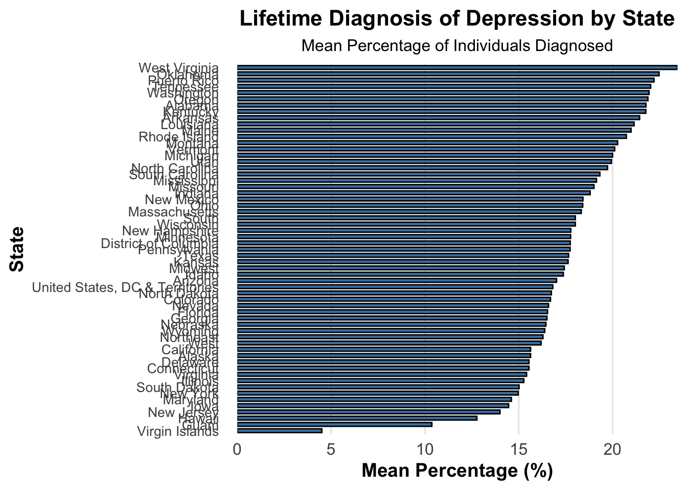

| State | Mean Percentage |
|---|---|
| West Virginia | 15.452475 |
| Oklahoma | 14.314504 |
| Arkansas | 13.911765 |
| Louisiana | 13.595041 |
| Puerto Rico | 13.477895 |
| Kentucky | 13.470476 |
| Alabama | 12.968333 |
| Tennessee | 12.953571 |
| Mississippi | 12.530833 |
| New Mexico | 12.361029 |
| Michigan | 12.154400 |
| South Carolina | 12.021488 |
| South | 11.960656 |
| Florida | 11.919167 |
| Nevada | 11.810280 |
| Ohio | 11.797521 |
| North Carolina | 11.620161 |
| Indiana | 11.531405 |
| Missouri | 11.502542 |
| Arizona | 11.368841 |
| Midwest | 11.342778 |
| United States, DC & Territories | 11.329319 |
| Oregon | 11.315534 |
| Rhode Island | 11.288393 |
| Washington | 11.283459 |
| Montana | 11.113158 |
| Texas | 10.994815 |
| Georgia | 10.971312 |
| West | 10.928649 |
| California | 10.873944 |
| Northeast | 10.852663 |
| Guam | 10.847761 |
| New York | 10.820000 |
| Massachusetts | 10.793277 |
| New Jersey | 10.780357 |
| Kansas | 10.534091 |
| Pennsylvania | 10.506195 |
| Maine | 10.301020 |
| Vermont | 9.963918 |
| Connecticut | 9.913953 |
| District of Columbia | 9.889256 |
| Delaware | 9.770270 |
| Illinois | 9.752459 |
| Utah | 9.618349 |
| Virginia | 9.586290 |
| Wyoming | 9.490816 |
| Colorado | 9.483594 |
| Maryland | 9.428346 |
| Wisconsin | 9.419608 |
| Idaho | 9.372000 |
| Alaska | 9.337963 |
| Minnesota | 9.322137 |
| New Hampshire | 9.080208 |
| Hawaii | 8.835294 |
| Nebraska | 8.665138 |
| Iowa | 8.425743 |
| South Dakota | 7.584158 |
| North Dakota | 7.393069 |
| Virgin Islands | 5.883333 |
PM566 FINAL REPORT
Introduction
The 2015-2022 Alzheimer’s Disease and Healthy Aging Data was obtained from the CDC Division of Population Health’s Behavioral Risk Factor Surveillance System (BRFSS). The BRFSS is a cross-sectional telephone survey that health departments of each state conduct monthly with standardized questionnaires from the CDC. The purpose of this initiative is to collect prevalence data of risk behaviors and preventive health practices that affect health status. Alzheimer’s Disease is an irreversible and debilitating neurodegenerative disorder that often accounts for 60-80% of dementia cases.
Methods
The Alzheimer’s Disease and Healthy Aging Data from 2015-2022 was acquired from data.gov and read in as a CSV file. Using the “dim” function, there were a total of 31 variables and 28,4142 observations. The “str” and “summary” functions showed that locations were based on abbreviations of state. Topics were classified into “mental health,” “overall health,” “smoking and alcohol use,” “caregiving,” “nutrition/physical activity/obesity,” “screenings and vaccines,” and “cognitive decline.” Questions ranged from “frequent mental distress, and”lifetime diagnosis of depression,” to “colorectal cancer screening.” The dataset was screened to make a subset of all those who were classified for “Mental Health” under the variable class. This yielded a total of 14,508 observations. O
Results
Clean mental health data
| State | Mean Percentage |
|---|---|
| West Virginia | 23.46117 |
| Oklahoma | 22.47821 |
| Puerto Rico | 22.20833 |
| Tennessee | 22.02957 |
| Washington | 21.94161 |
| Oregon | 21.88318 |
| Alabama | 21.77805 |
| Kentucky | 21.77000 |
| Arkansas | 21.44098 |
| Louisiana | 21.14435 |
| Maine | 20.98667 |
| Rhode Island | 20.73360 |
| Montana | 20.26777 |
| Vermont | 20.11250 |
| Michigan | 19.99926 |
| Utah | 19.93729 |
| North Carolina | 19.73158 |
| South Carolina | 19.32240 |
| Mississippi | 19.14083 |
| Missouri | 19.00750 |
| Indiana | 18.80385 |
| New Mexico | 18.42086 |
| Ohio | 18.40758 |
| Massachusetts | 18.33030 |
| South | 18.01543 |
| Wisconsin | 18.01250 |
| New Hampshire | 17.77216 |
| Minnesota | 17.76268 |
| District of Columbia | 17.74344 |
| Pennsylvania | 17.73417 |
| Texas | 17.65429 |
| Kansas | 17.62676 |
| Midwest | 17.42446 |
| Idaho | 17.37453 |
| Arizona | 17.01329 |
| United States, DC & Territories | 16.81198 |
| North Dakota | 16.73774 |
| Colorado | 16.69044 |
| Nevada | 16.58468 |
| Florida | 16.53125 |
| Georgia | 16.50320 |
| Nebraska | 16.44609 |
| Wyoming | 16.38416 |
| Northeast | 16.28939 |
| West | 16.18737 |
| California | 15.62925 |
| Alaska | 15.62845 |
| Delaware | 15.54083 |
| Connecticut | 15.54030 |
| Virginia | 15.41520 |
| Illinois | 15.26744 |
| South Dakota | 15.01429 |
| New York | 14.97039 |
| Maryland | 14.60438 |
| Iowa | 14.45825 |
| New Jersey | 13.99915 |
| Hawaii | 12.76667 |
| Guam | 10.36522 |
| Virgin Islands | 4.50000 |
